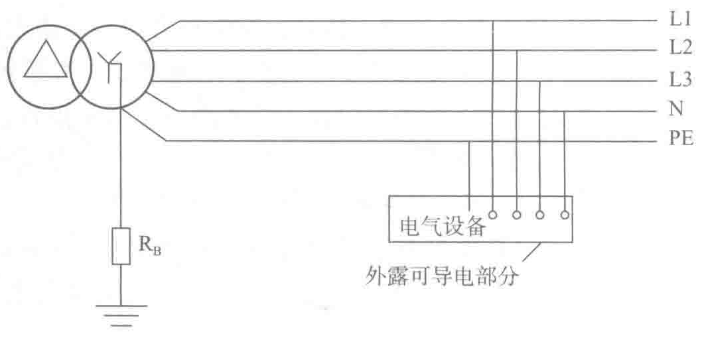

电电流由采样电阻来限制，保证不会有大电流对电池充电造成电池充爆；当市电停电时放电通路马上打通，电池直接给负载放电，直至柴油发电机启动继续供电。
随着未来SSD固态硬盘技术以及风扇PWM调压技术的发展，以及主板上VRM（VRM指电压调节模组，是为微处理器提供合适的供应电压的一项装置）电源的输入范围加宽，对12V的稳定性不再要求在5%以内，此时可以直接在12V上挂电池并进行电池的均浮充管理，这种12V挂接电池方案的应用会越来越广泛。
2.3.8 低压配电接地系统
低压配电系统的接地方式直接关系到人身安全、设备安全及设备的正常运行。不同低压配电系统的接地方式一定程度上决定了系统中基本低压保护电器的选择和供电系统的实现方式。需要根据电击防护、可靠性要求、用电负载的特性和电磁兼容等因素确定具体的接地形式。
1. 低压配电接地系统基本形式
低压配电不同的接地系统（常被称作电源系统类型或系统接地方式）表征了变压器低压侧二次绕组中性点的接地方式和它所供电的低压电气装置外露可导电部分采用的接地方法。
（1）TN系统
1）TN-S系统定义
系统电源端（变压器或发电机的中性点）直接接地，并单独设立系统保护线与电气设备的保护地线连接，系统保护线（PE）和中性线（N）分开，如图2-17所示。正常时PE线没有负载电流，系统干扰少，适用于数据处理和精密电子仪器设备。

2）TN-C-S系统定义
系统电源端（变压器或发电机的中性点）直接接地，并与电气设备的保护地线连接，如图2-18所示。系统某一点起，PEN分为保护线和中性线（PEN线分开后，不能再合并），分开后，N线对地绝缘。此系统前面的TN-C系统可满足长距离输电的经济性需要，后端进入建筑物后采用TN-S系统可满足安全性和对电位敏感的电子设备的需要。